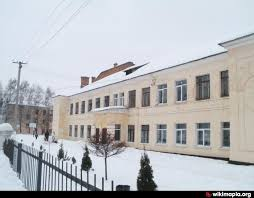

На околиці мальовничого міста Вінниці, серед зеленого розмаю квітів і дерев, примостилась будівля 80–річної давнини з яскравими та незабутніми традиціями – комунальний заклад «Загальноосвітня школа I–III ступенів № 12 Вінницької міської ради». Стоїть школа у квітучому яблуневому саду і з року в рік гостинно відкриває двері своїм учням першого вересня та відряджає юнаків і дівчат у нелегку життєву дорогу в червні.
А починалося все у далекому 1936 році з декількох класів з російською мовою навчання для дітей військовослужбовців у приміщенні школи № 13.
Після важких воєнних лихоліть школа відновила свою роботу в 1944 році під керівництвом першого післявоєнного директора Лабунського С.І.
А вже в 1951 році школа № 12 почала існувати як окремий навчальний заклад в невеликому приміщенні, яке після добудов і прибудов займає і сьогодні.
Скільки прекрасних людей виросло у її стінах?
Відмінниками освіти України стали вчителі: Бухенко Зінаїда Іванівна, Варшавська Лілія Яківна, Кірічева Еліса Данилівна, Глушкова Наталія Миколаївна, Пуздренко Олена Федорівна, Барбарова Меланія Йосипівна, Римська Тамара Миколаївна, Новосьолова Майя Іванівна, Потапенко Наталя Іванівна.
Депутати міської ради: Малінін Володимир Володимирович, Савельєв Володимир Євтухійович
Міністр молоді та спорту України – Жданов Ігор Олександрович.
За період свого існування школа зростила цілий ряд учительських династій: Глушкова Катерина Миколаївна, Глушкова Наталія Миколаївна, Дербунова Лідія Олександрівна, Бухенко Зінаїда Іванівна, Півень Сергій Станіславович, Пуздренко Олена Федорівна, Пуздренко Анатолій Якович, Новосьолова Майя Іванівна, Онофрійчук Людмила Миколаївна, Онофрійчук Ольга Олександрівна.
У 1987 році школу очолила Запонюк Валентина Олександрівна.
В цьому ж році було завершено будівництво адміністративної частини, спортивного та актового залів, їдальні.
У 2001 році школу очолив Олійник Броніслав Броніславович. З 2003 по 2013 рік директором школи був Загородній Сергій Петрович.
З 2006 року – школа повністю переходить на українську мову навчання.
Протягом 2013-2016 років заклад очолювала Богар Наталія Василівна. З жовтня 2016 року директором закладу призначено Вітюк Олену Григорівну. На сьогоднішній день у закладі навчається 1236 учнів у 42 класах, працює 80 педагогічних та 20 технічних працівників.
Відкрито два комп’ютерних класи, обладнаних сучасною технікою, включаючи мультимедійну дошку, діє 15 зразкових кабінетів, поглиблено вивчається польська та англійська мови, у школі ІІІ ступеня впроваджено профільне навчання. Педагогічною майстерністю вирізняються плеяда педагогів початкової школи, що використовує у навчанні новітні технології і методи навчання: розвивальне навчання, методика «Росток», ТРВЗ- педагогіка, ОДІ-технології, «хмарні технології». З 2016 р. учні початкової школи працюють на освітній платформі «Вчи.юа»
У 2017- 2018 навчальному році заклад бере участь у пілотному проекті по впровадженню Державного стандарту Нової української школи та з експериментальному науково-педагогічному проекті «Інтелект України».
Одним з важливих завдань нашої школи є розвиток творчої всебічно розвиненої особистості. Щодня в післяурочний час діти зайняті гуртковою роботою. Система гурткової роботи школи спрямована на розвиток творчості учнів, їх здібностей, талантів, формування естетичного смаку, здорового способу життя, на задоволення потреб учнів щодо реалізації їх особистості. У закладі працюють гуртки різних напрямків: вокальний ансамбль молодших класів «Вітерець», вокальний ансамбль «Веселкові барви» та хор учнів старших класів, ляльковий театр та танцювальний колектив «Фантазія», «Мистецтвознавець», ДЮП «Вогник», «Юні інспектори руху», «Допризовник», «Спілкуємось англійською», «Гурток польської мови» та «Аматор», «Юні екологи», «Барвисте коло читачів». Гуртківці закладу є неодноразовими учасниками та переможцями міських, всеукраїнських, міжнародних конкурсів.
Навколо з’являються нові будинки, магазини, офіси, а школа все стоїть, як 80 років тому, і гостинно зустрічає своїх учнів. Здається, що і час не владний над нею…